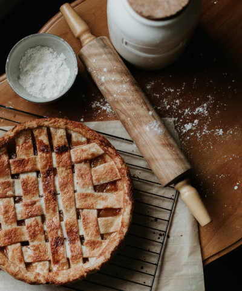

Go back to homepage
Grandma's Apple Pie

The earliest printed recipe is from England!
An apple pie is a pie in which the principal filling ingredient is apples, and the earliest printed recipe, is from England! Apple pie is often served with whipped cream, ice cream ("apple pie à la mode"), or cheddar cheese, and it's generally double-crusted, with pastry both above and below the filling, and the upper crust may be solid or latticed (woven of crosswise strips), and the bottom crust may be baked separately ("blind") to prevent it from getting soggy. Deep-dish apple pie often has a top crust only Apple pie is an unofficial symbol of the United States and one of its signature comfort foods.
Learn more about apple pie
Ingredients:
- 3/4 cup white sugar
- 2 tablespoons all-purpose flour
- 1/2 tablespoon ground cinammon
- 1/4 teaspoon ground nutmeg
- 1/2 teaspoon lemon zest
- 7 cups thinly sliced apples
- 2 teaspoons lemon juice
- 1 tablespoon butter
- 1 recipe pastry for a 9-inch double crust pie
- 4 tablespoons milk (Optional)
Steps:
- Step 1: Preheat oven to 425 degrees F (220 degrees C).
- Step 2: Mix togheter the sugar, flour, cinammon, nutmeg and lemon peel.
- Step 3: Line one crust in a 9-inch deep-dish pie pan. Layer 1/3 of apples into pie crust. Sprinkle with sugar mixture and repeat until done. Sprinkle with lemon juice and dot with butter.
- Step 4: Place second pie crust on top of filling and flute the edges. Cut vents in top crust and brush with milk for a glazed appearance if desired.
- Step 5: Bake at 425 degrees F (220 degrees C) for 40 to 50 minutes.